Uma evolução da experiência do Viva Engage, preparada para a migração ao Google Workspace.
Respeito · privacidade · participação voluntária
Gizele Luz25/09/2026 · 9h38 · Mural do Bem-estar
Já pensando no fim de semana? O que você pretende fazer para recarregar as energias? Um momento de descanso, uma caminhada, música ou simplesmente não fazer nada já pode fazer diferença.
João Zanon
Descansar e buscar a Deus. Aproveito e desejo um bom fim de semana a todos!
Victor Oliveira
Dormir até tarde, visitar meus sogros e fazer calistenia sem preocupação com horários.
Gizele Luz24/09/2026 · 10h57 · Saúde mental
O que ajuda você a manter o equilíbrio emocional? Pode ser uma pausa, atividade física, música, silêncio, conversar com alguém ou simplesmente respirar e desacelerar.
Renan Miranda da Silva
A prática da minha religião e tocar instrumentos: violão, guitarra e baixo.
Sara Mota
Meu motivo de equilíbrio diário tem quatro patas e um narizinho gelado.
Gizele Luz23/09/2026 · 11h01 · Gratidão
Um momento para agradecer. Pare por um minutinho e pense em algo pelo qual você é grato: uma pessoa, uma conquista, um aprendizado ou uma pequena coisa que traz leveza.
Aline Crivelli
O sucesso não acontece de uma vez. Ele é construído todos os dias.
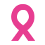
Campanha em destaque
Esquenta Outubro Rosa
Confira a iniciativa e o sorteio de inscrições para corridas solidárias divulgado pela Comunicação Interna Semantix.
Informações médicas permanecem protegidas e separadas dos dados operacionais dos benefícios. Gestores visualizam somente indicadores agregados.
Saúde integral
Encontre o cuidado certo para cada momento.
Atendimento médico, saúde mental, benefícios, segurança, inclusão e canais de acolhimento reunidos em um único lugar.
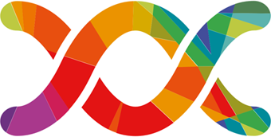
Medicamentos e bem-estar
Vidalink
Plano de medicamentos e recursos de bem-estar conforme a modalidade contratada pela empresa.
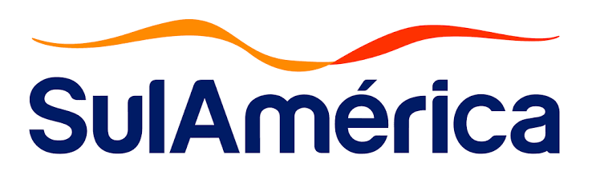
Plano de saúde
SulAmérica Saúde
Informações sobre rede, carteirinha, cobertura e canais digitais conforme o plano elegível.
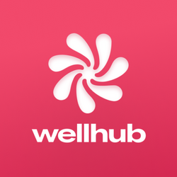
Atividade e bem-estar
Wellhub
Acesso a academias, estúdios e aplicativos de bem-estar conforme o plano disponível.
Acolhimento e orientação
Espaço Saúde
Telemedicina, consultas presenciais, aferição de pressão, curativos, primeiros cuidados, orientação médica e exames ocupacionais, conforme registros de 2025.
Cuidado presencial
Massoterapia
Atendimentos em São Paulo e Londrina, com agenda, lembretes e recursos acessíveis.
Outros benefícios aparecerão conforme perfil, unidade e informações validadas pelo RH.
Cobertura, elegibilidade, valores, contatos e horários podem variar. Informações extraídas do histórico do Espaço Saúde devem ser confirmadas com RH, Benefícios e SST antes da implantação.
Escolha pelo que você precisa
Cuidado, acolhimento e proteção
Cada necessidade segue para o canal responsável, sem misturar informações médicas e relatos sensíveis.
Saúde mental
Apoio psicológico, teleatendimento, conteúdos de autocuidado, estresse, ansiedade e riscos psicossociais.
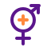
Mulheres e equidade
Saúde da mulher, prevenção, maternidade, climatério, enfrentamento à violência e grupos de afinidade.
Respeito e inclusão
Orientação sobre racismo, capacitismo, LGBTfobia, neurodiversidade, acessibilidade e comunicação inclusiva.
Ética e denúncia
Canal independente para relatar assédio, discriminação ou outra conduta inadequada, com orientações sobre sigilo e anonimato.
RH, SST e CIPA
Direcionamento para questões trabalhistas, saúde ocupacional, prevenção de riscos e participação da CIPA.
!
Preciso de ajuda urgente
Orientação imediata para situações de risco à vida, crise emocional ou violência. Emergência não deve aguardar resposta por e-mail.
Saúde mental no trabalho
NR‑1 e riscos psicossociais
Desde 26 de maio de 2026, fatores psicossociais relacionados ao trabalho fazem parte expressamente do Gerenciamento de Riscos Ocupacionais. Sobrecarga, assédio, falta de autonomia, apoio insuficiente e isolamento no trabalho remoto precisam ser identificados, avaliados e tratados no GRO/PGR.
Telemedicina para colaboradores e dependentes elegíveis, atendimentos presenciais em São Paulo e Londrina e orientação em horário comercial.
Telemedicina
segunda a sexta, das 9h às 17h
São Paulo
terça, 8h às 11h; quarta, 14h às 17h
Londrina
segunda, terça, quarta e sexta, 13h às 17h; quinta, 8h às 11h
Dados históricos para demonstração. Confirmar profissionais, horários e elegibilidade antes do piloto.
Proteção de dados
Centralizar o acesso não significa misturar informações.
Prontuários e conversas médicas não entram no Monday nem na agenda da massoterapia. Portal apenas direciona cada pessoa ao serviço correto; relatórios corporativos utilizam dados agregados e não clínicos.
Saúde em movimento
Campanhas e iniciativas
Acompanhe ações atuais e consulte o histórico de campanhas de saúde e bem-estar.
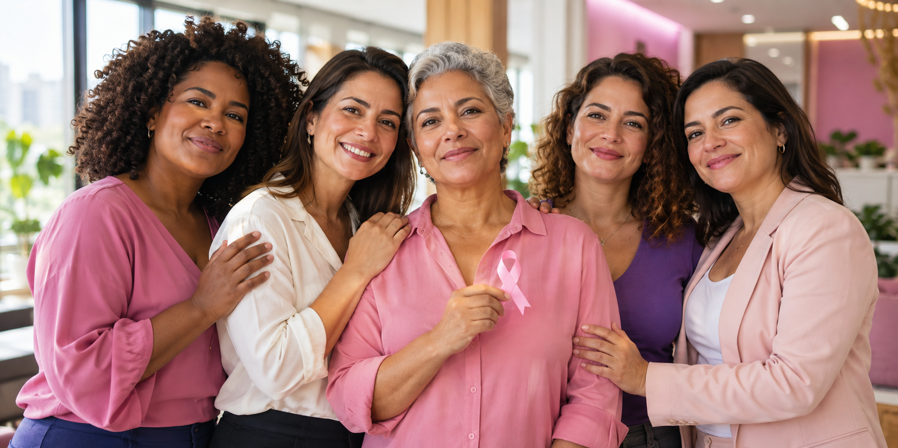
AtivaCampanha atual
Esquenta Outubro Rosa
Iniciativa de conscientização com sorteio de inscrições para corridas solidárias. Regras, elegibilidade e prazos serão publicados no comunicado oficial.
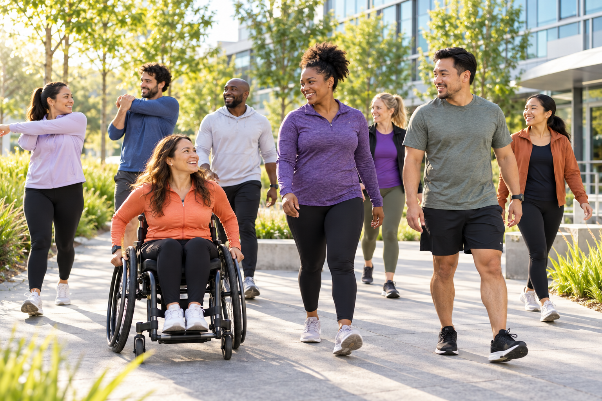
Proposta de pilotoComunidade e movimento
Semantix em Movimento
Desafio voluntário inspirado nas campanhas Mude1Hábito e 21 Dias, com caminhada, alongamento, dança, yoga, fisioterapia e esporte adaptado. Participação vale mais que desempenho.
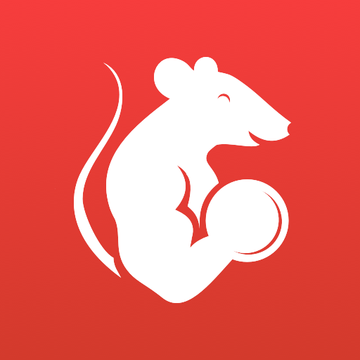
Comunidade e check-insBenefício e atividades
Grupo corporativo e check-ins opcionais pelo GymRats
Fotos opcionais e publicações no Mural
Metas individuais e coletivas, sem comparação corporal
Histórico recuperado
Campanhas e iniciativas de 2021 a 2026
Conteúdos reconstruídos a partir de 284 registros da comunidade do Espaço Saúde.
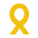
Histórico · 2026
Mural do Bem-estar · Setembro Amarelo
Sequência interativa de autocuidado, equilíbrio emocional, gratidão e pequenas conquistas durante o Setembro Amarelo.
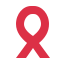
Histórico · 2026
Junho Vermelho
Campanha de doação de sangue e mobilização de colaboradores, com orientações e reconhecimento da participação.
Histórico · 2026
Orgulho Autista e comunicação inclusiva
Conteúdos sobre neurodiversidade e webinar sobre interação e acolhimento de pessoas surdas.
Encerrada · 2025
Setembro Amarelo
Webinares, quiz de acolhimento, pausa consciente e orientações para reconhecer sofrimento emocional.
Encerrada · 2025
Mude1Hábito
Desafio de 21 dias com fotos no Viva Engage, pontos no Wellhub, mais de 100 interações e 146 participantes ativos.
Encerrada · 2025
Programa Inclui 2025
Acompanhamento personalizado para colaboradores com deficiência e orientação para atualização cadastral.
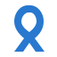
Encerrada · 2025
Circuito Outubro Rosa e Novembro Azul
Autocuidado, prevenção e divulgação de exames elegíveis com isenção de coparticipação.
Encerrada · 2025
SIPAT e saúde ocupacional
Autocuidado, qualidade de vida, estresse, movimento, alimentação, exames de rotina e segurança.
Encerrada · 2024
Desafio dos 21 Dias
Calendário de hábitos com fotos da comunidade, atividade física, sono, alimentação, meditação e bem-estar financeiro.
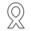
Encerrada · 2024
Janeiro Branco
Transformar, renovar e inspirar: campanha de promoção da saúde mental, autocuidado e procura de ajuda profissional.
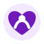
Histórico · 2023
Espaço Saúde & Inclusão
Acolhimento, apoio psicológico, orientação médica e projeto de acompanhamento de pessoas com deficiência.
Histórico · 2022
Saúde emocional e autoestima
Conteúdos sobre terapia, autocuidado, autoestima, estresse, sono e prevenção ao suicídio.
Origem · 2021
Início da comunidade Espaço Saúde
Canal de notícias sobre promoção da saúde, qualidade de vida, terapia, gestação, patologias clínicas e Covid-19.
Proposta do piloto
Uma jornada acessível começa antes do atendimento.
Recursos digitais, orientação, espaço físico e procedimentos precisam funcionar como um único sistema.
Como chegar
Rota acessível até a sala
Projeto físico deverá ser validado com usuários e por profissional habilitado.
1
Antes de sair
Mapa, fotos, texto e orientação em áudio disponíveis no portal.
2
Entrada e recepção
Atendimento treinado, identificação clara e opção de solicitar apoio.
3
Deslocamento
Rota desobstruída, sinalização visual e tátil e piso tátil onde o projeto indicar.
4
Identificação da sala
Placa contrastante, relevo, Braille e ponto NFC ou QR com marcador tátil.
Ambiente previsível
Sala organizada para autonomia
Layout permanece fixo. Mudanças são comunicadas e apresentadas antes dos atendimentos.
Circulação sem fios, tapetes ou obstáculos
Materiais em posições padronizadas
Etiquetas táteis, letras grandes e contraste
Espaço para cadeira de rodas e transferência
Alertas visuais e sonoros
Estação SELENA com monitor grande, voz, texto e teclado
Desenho universal
Uma informação, diferentes formas de acesso
Nenhum canal é obrigatório.
Visual e baixa visão
Leitor de tela, áudio, contraste, zoom, Braille e referências táteis.
Auditiva
Texto, legendas, alertas visuais e vibração.
Física
Circulação acessível, comandos por voz ou teclado e mobiliário adequado.
Sensorial e cognitiva
Fluxo previsível, linguagem simples e iluminação ajustável.
Sobre o Espaço Saúde
Um ponto de encontro para cuidado, informação e autonomia.
Esta proposta evolui o canal já existente na Semantix e reúne, em uma experiência acessível, conteúdos, campanhas, benefícios e serviços de saúde e bem-estar.
01
Um único ponto de acesso
Informações atualizadas ficam reunidas, sem depender de procurar mensagens antigas ou descobrir com quem falar.
02
Acessível para diferentes pessoas
Voz, texto, contraste, ampliação, teclado e alternativas presenciais coexistem na mesma jornada.
03
Privacidade por princípio
Dados médicos permanecem separados das informações operacionais necessárias para administrar benefícios.
Memória e evolução
Uma história de cuidado desde 2021
O PDF histórico reúne 284 registros da comunidade.
Nasce a comunidade Espaço Saúde
Promoção da saúde, qualidade de vida, terapia, gestação, orientação clínica e apoio durante a Covid-19.
Conteúdo preventivo e emocional
Saúde mental, autoestima, sono, atividade física, saúde da mulher e prevenção.
Inclusão e telemedicina
Atendimentos presenciais e remotos, apoio psicológico e acompanhamento de pessoas com deficiência.
Comunidade em movimento
Desafio dos 21 Dias, fotos no Viva Engage, ergonomia, bem-estar e campanhas de prevenção.
Mude1Hábito e Programa Inclui
Integração com Wellhub, campanhas interativas, SIPAT, diversidade e informação de saúde.
Mural do Bem-estar
Escuta, equilíbrio emocional, gratidão, pequenas conquistas e evolução para o Portal Semantix Bem-estar.
Cultura que cuida
Reconhecimento também significa compromisso contínuo.
O portal conecta saúde, segurança psicológica, diversidade, inclusão e qualidade de vida. Antes da versão oficial, certificação vigente, período e aplicação do selo Great Place to Work devem ser confirmados com RH.
Protótipo
Projeto do Grupo 3
Hipótese desenvolvida para o Desafio de Inovação do Programa de Estágio 2026. Conteúdos, contas, profissionais e horários devem ser validados antes de uma implantação real.
Mural do Bem-estar · 25/09/2026
Como você quer se sentir nos próximos dias?
Cuidado também pode significar desacelerar e reconhecer aquilo de que precisamos.
Gizele LuzPublicado em 25/09/2026, às 9h38 · atualizado a partir do histórico do Espaço Saúde
Nem sempre precisamos de grandes planos para cuidar de nós. Às vezes, um momento de descanso, uma caminhada, ouvir uma música ou simplesmente não fazer nada já pode fazer diferença.
Pequenas pausas
Pausas intencionais ajudam a observar como estamos nos sentindo e a retomar as atividades com mais presença. O importante é encontrar uma possibilidade compatível com a própria rotina.
Escolha hoje uma coisa simples que você gostaria de fazer para cuidar de si.
Uma escolha possível
Alongar o corpo, beber água, respirar por alguns minutos ou reservar um horário de massoterapia são exemplos de ações que podem ser incorporadas ao dia.
Benefícios disponíveis
O Espaço Saúde Semantix reúne informações e caminhos de acesso aos serviços e benefícios de saúde e bem-estar oferecidos pela empresa.
O que pretendo fazer neste fim de semana para recarregar as energias é descansar e buscar a Deus. Aproveito e desejo um bom fim de semana a todos!
Dormir até tarde, visitar meus sogros e fazer calistenia sem preocupação com horários.